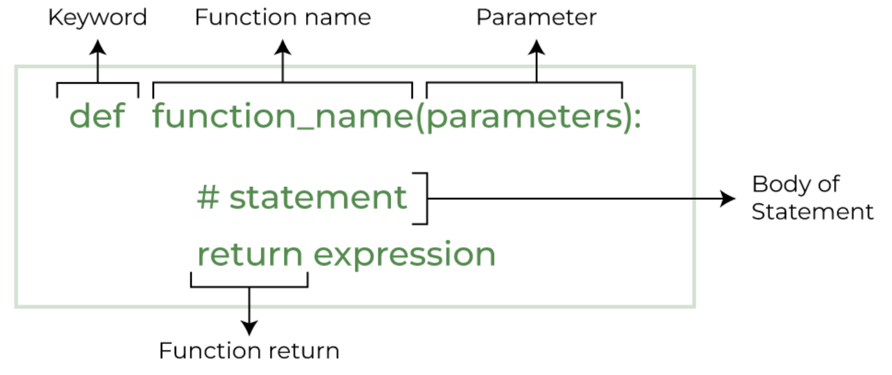
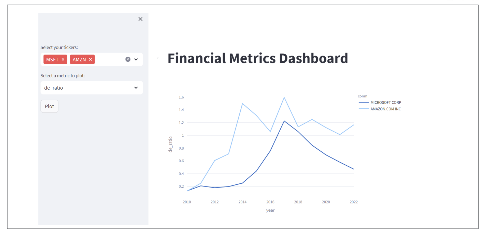

3 Develop an app with streamlit
3.1 Context and Goal
Transition from a prototype .ipynb file to a production-ready .py file that builds an interactive Streamlit dashboard.
Data scientists often start in Jupyter Notebooks for exploration and analysis. However, real-world applications require deployable, interactive dashboards for sharing insights with others. The goal here is to:
- Refactor your notebook code into modular Python functions.
- Wrap those functions inside an interactive Streamlit interface.
- Understand how to iterate quickly with streamlit run app.py.
3.2 Start from a .ipynb file
-
Compute Financial Ratios Notebook.ipynb– a Jupyter Notebooksp500_data.csv– Financial data.sp500_tickers.csv– List of tickers.
3.3 Make it a .py file with functions
The syntax of defining a python function.

-
- ‘fetch_data_local’
fetch_data_local_single_tickercalculate_metricsplot_trend
Good practices:
Don’t rely on variables that aren’t passed into your function.
If your function can’t run using only its inputs, it’s not truly reusable.
✅ Do this:
def compute_margin(revenue, cost):
return (revenue - cost) / revenueüö´ Not this:
total_revenue = 1000
def compute_margin(cost):
return (total_revenue - cost) / total_revenue
# works in notebook, breaks in moduleif __name__ == "__main__":
# Simple test cases
print(compute_pe_ratio(1000000, 50000, 30))3.4 Learn a bit about Streamlit
You don’t know what Streamlit can do. Streamlit doesn’t know what you want.
But, we’ve gotta start somewhere.
So let’s learn a bit. Once you know what it can do,
you’ll finally know what you can make it do (with AI’s help).
- What is Streamlit, and where is its API reference and official documentation?
- What can Streamlit do — what kinds of apps or problems is it best at solving?
- What small examples or experiments can I build to quickly discover and learn its core features?
- Start with the official docs and examples — skim the Streamlit docs homepage and gallery to get a mental map of what’s possible before diving into code.
- Learn by doing small experiments — build micro-apps (e.g., one with a button, one with a chart) to turn reading into muscle memory.
- E.g., create
app1.py,app2.pyfiles each to test and run some micro streamlit apps.
- E.g., create
- Read code, not just tutorials — explore community demos or open-source Streamlit apps to see how others structure layouts, manage state, and handle inputs.
- Iterate with feedback loops — run streamlit run
app.pyoften and tweak one thing at a time; immediate visual feedback accelerates understanding. - Reflect and generalize — after each mini-project, note what patterns repeat (e.g., sidebar widgets, caching, layout control) to build knowledge for future tools.
3.5 Build a Streamlit app
Here is an example. Try to build a dashboard displaying the financial metrics interactively.

3.6 üí° Bonus: Add an AI Feature
Integrate the Google Gemini API to enhance your app with AI-powered capabilities.
Explore the API
Learn how to use the Google Gemini API and follow the setup guide to install the SDK.Get an API Key
You can obtain a free API key using your Google account.Keep It Secure
Never share or publish your API key on GitHub or any public platform — treat it like a password. Delete it after use.